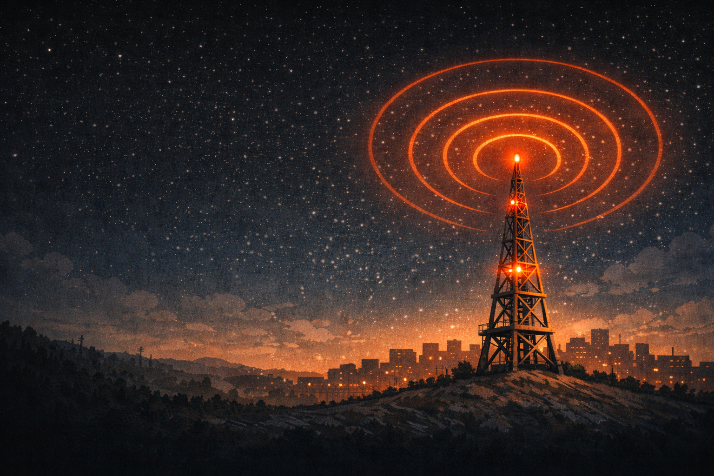
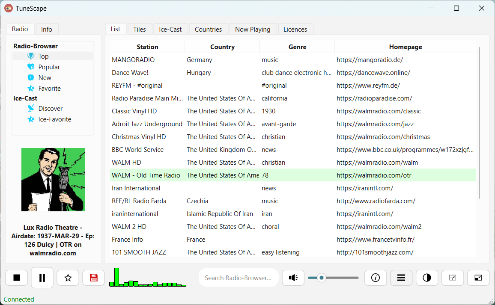
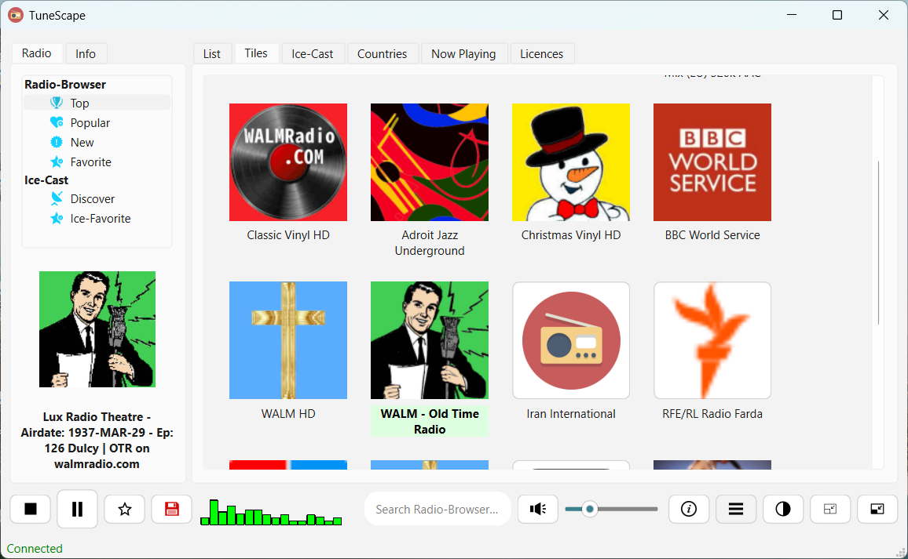
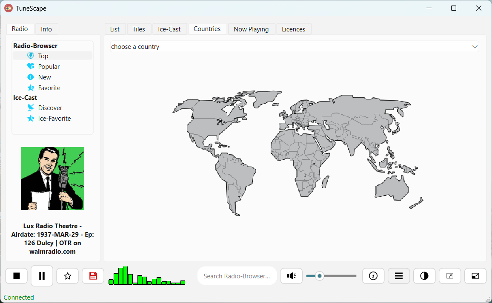
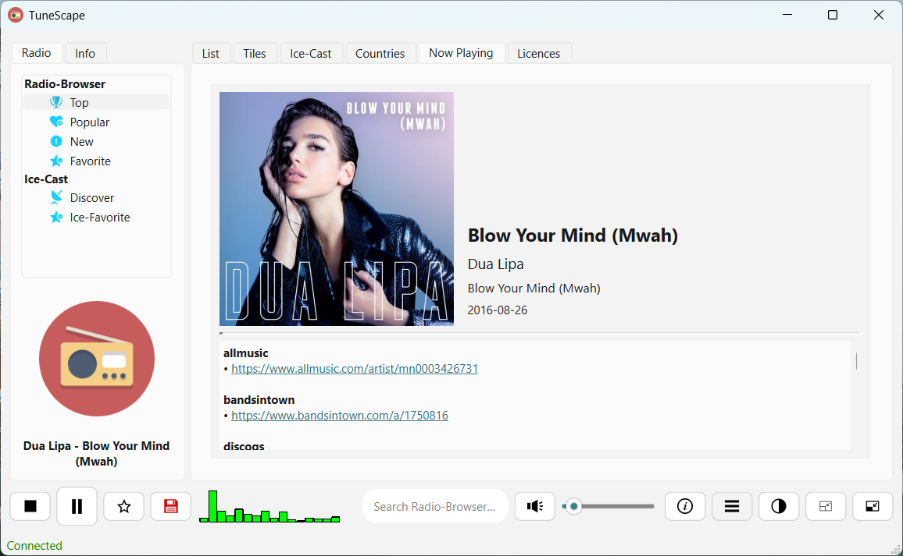
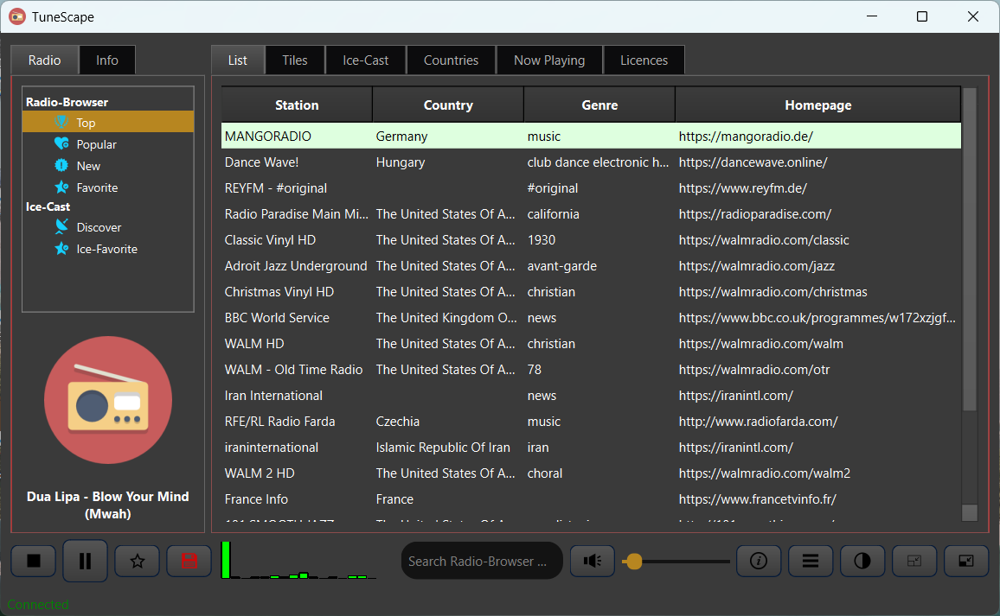
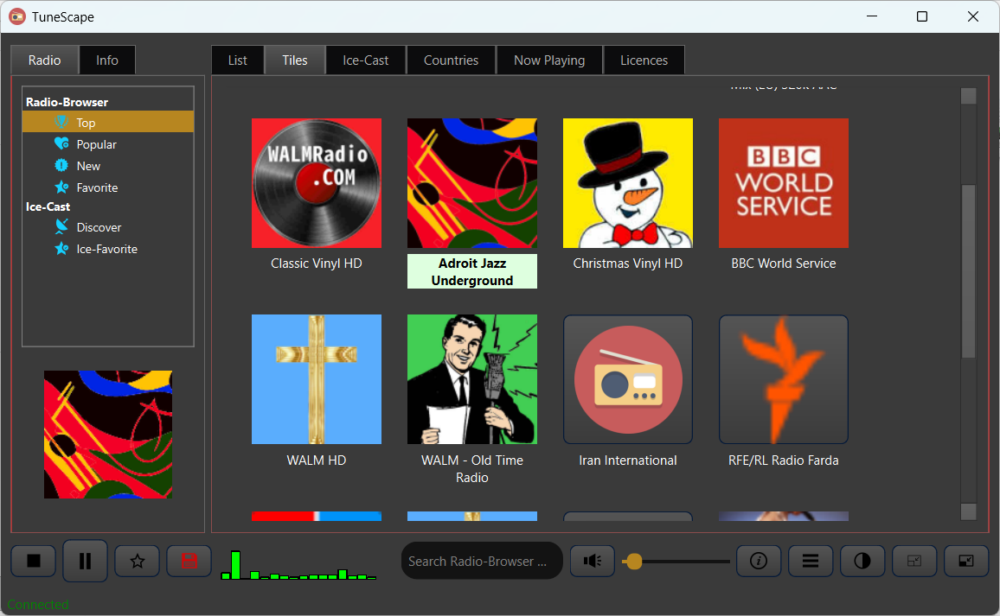

TuneScape is a free, open-source internet radio player built with Qt/C++. Live cover art, artist biographies, thousands of stations — no ads, no accounts.

Built on Qt 6 with a clean, cross-platform architecture. Powered by open APIs and community radio databases.
Fetches cover art and artist biographies live from MusicBrainz, Cover Art Archive, and Wikipedia while you listen.
Powered by radio-browser.info — a community-maintained database with tens of thousands of radio stations worldwide.
Browse stations by country. Find local and international stations without digging through long generic lists.
Import radio playlists from radio-browser.info or export your favorite stations as M3U for VLC and other players.
Real-time audio frequency spectrum visualization powered by an FFT engine built directly into the app.
A compact always-on-top mini player for minimal screen footprint. See what's playing without switching windows.
Polished light and dark appearances with a refined, elegant UI. More themes planned for future releases.
When a connection drops, TuneScape detects it and reconnects automatically — so you never miss a beat.
Released under GPLv3. No ads, no accounts, no telemetry. The source code is fully available on GitHub.
A brief history of TuneScape updates.
Major step forward. A new panel fetches and displays live cover art from Cover Art Archive and artist biographies from Wikipedia alongside MusicBrainz metadata, all while you listen.
You can now remove radio stations from your favorites list directly while browsing.
Export your IceCast favorite stations to an M3U playlist file for use in external players.
Export playlists and import M3U files from radio-browser.info. Load any category, tag, or full database export straight into TuneScape.
Browse stations by country. A major quality-of-life improvement for finding stations in a specific region.
A compact always-on-top mini player that displays only the essential information — stay informed without losing screen space.
A new, more elegant appearance for both themes. Architecture also prepared for adding further theme options in the future.
Real-time audio frequency spectrum powered by a custom FFT implementation. Built using QGraphicsView after significant technical work on buffer and stream synchronization.
A glimpse of TuneScape's interface — dark, minimal, and focused on the music.






TuneScape is built and maintained in free time. If you enjoy the app, a contribution goes a long way — but there are plenty of other ways to help too.
💙 Donate via PayPal